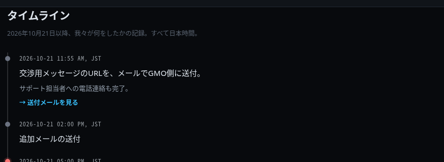

事件サイト：年表
原掲載URL：https://coronamng.store/timeline.php
以下は事件サイトの掲載文であり、主張された行為や被害規模がすべて確認されたことを意味しない。
掲載文
タイムライン 2026年10月21日以降、我々が何をしたかの記録。すべて日本時間。 2026-10-21 11:55 AM, JST 交渉用メッセージのURLを、メールでGMO側に送付。 サポート担当者への電話連絡も完了。 → 送付メールを見る 2026-10-21 02:00 PM, JST 追加メールの送付 2026-10-21 05:00 PM, JST アカウント破壊に関する最終警告メールを送付。 同時に、アカウント破壊を開始。 → 送付メールを見る 2026-10-21 17:00 〜 現在 その後、2〜3時間おきに、アカウント破壊の進捗状況を伝える更新メールをGMO側に送付済み。 送付は継続中。GMOからの返信は、いまだに一切ない。 通告してから破壊まで、5時間あった。 電話もした。メールも送った。URLも渡した。返事は一度も来なかった。 次 → 送付メール
記録されたフィールド
{
"time_elements": [
{
"display": "2026-10-21 11:55 AM, JST",
"datetime": "2026-10-21T12:00+09:00"
},
{
"display": "2026-10-21 02:00 PM, JST",
"datetime": "2026-10-21T14:00+09:00"
},
{
"display": "2026-10-21 05:00 PM, JST",
"datetime": "2026-10-21T17:00+09:00"
},
{
"display": "2026-10-21 17:00 〜 現在",
"datetime": null
}
]
}
参照HTMLのSHA-256：99ecbdbe621435cce3344fa1d8fb22878abe4b17cb5dd2910d9ce82c04efc1ff